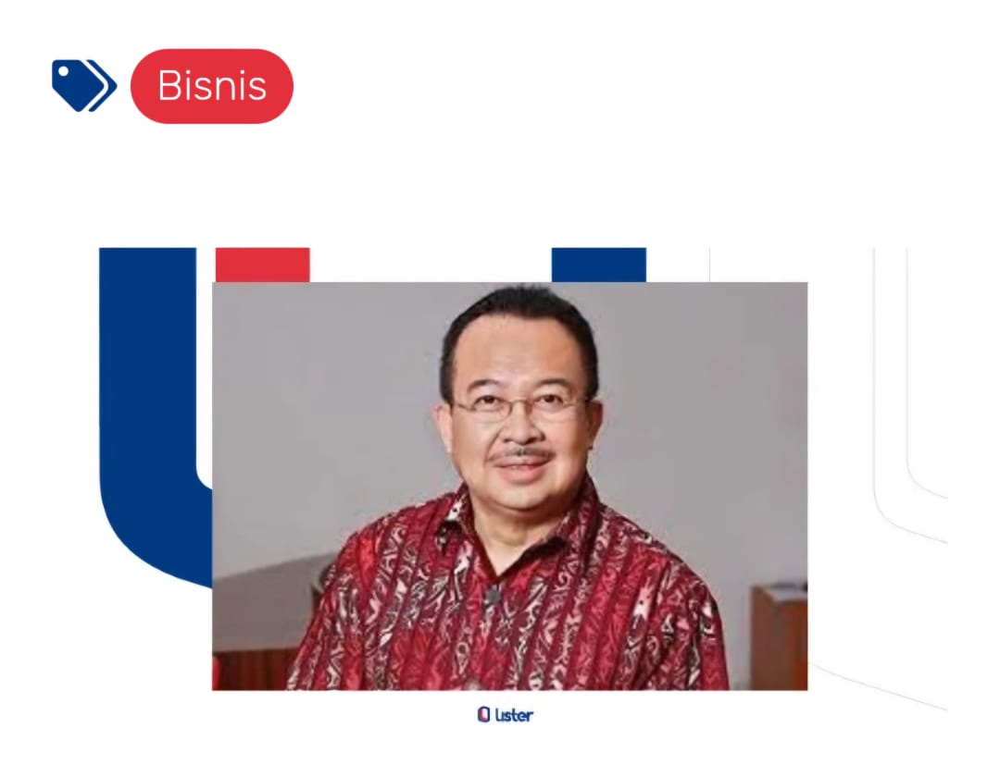

Daftar Artikel
perjalanan menuju penulis
"Mencapai kreativitas lebih tinggi meski dihantui rasa frustrasi."
apa itu karir?
"“Kejarlah meaning. Jangan kejar karir demi uang. Sebab, kalau kalian kejar uang, kalian tidak akan mendapatkan meaning. Kalau kalian kejar meaning, kalian akan dapatkan position, dan tentu saja uang.”"
Magang di Dunia Startup : Peluang untuk Belajar dan Berkembang
"Jadilah siap untuk belajar hal-hal baru dan menghadapi tantangan yang mungkin muncul di sepanjang jalan." – Tej Mehta
tunanetra berhasil menjadi programmer komputer?
"setiap ada kemauan pasti ada jalan dan jangan pernah menyerah."